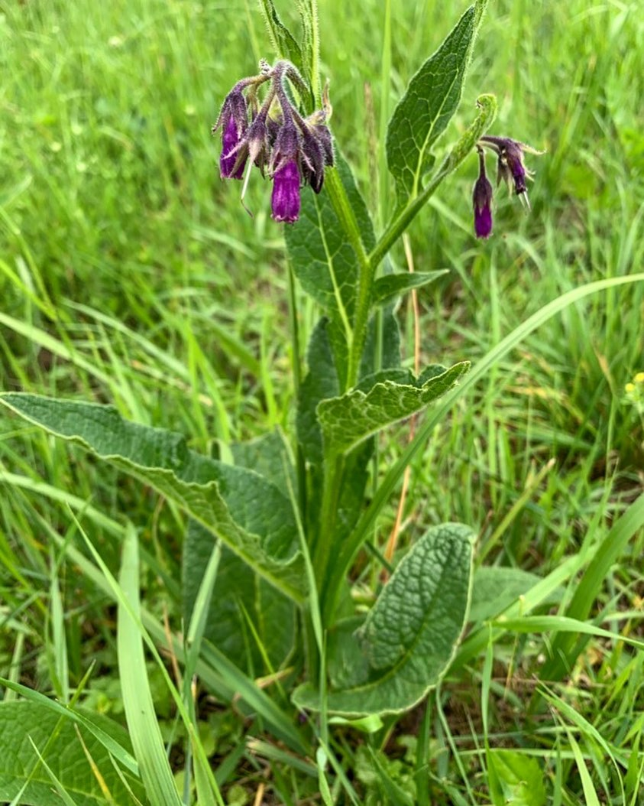

Čierny Koreň podľa @s_laskou_k_rastlinam — Normy Jedál
Kostihoj lekársky 🌱 Obsahuje veľa prírodných látok, ktoré obohacujú pokožku. Takouto látkou je napríklad alkaloid alantoín. Ďalej obsahuje triesloviny a sliz. Medzi vitamíny a minerály v tejto liečivej rastline môžeme spomenúť vitamín A, C, B12 a zinok, jód, vápnik, draslík, fosfor, železo alebo horčík. Túto rastlinu preslávila najmä schopnosť liečiť kosti🦴, opuchy, rany a všetko, čo je s tým spojené. Pomáha pri hojení zlomenín a pri bolestiach svalov a kostí v pokročilom veku.😎 #kostihoj #bylinky #liecivebylinky #ciernykoren #carovnebylinky